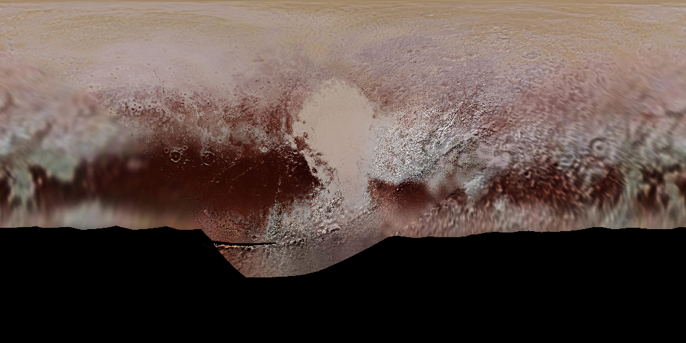

pyvista.examples.planets.download_pluto_surface#
- download_pluto_surface(texture=False, load=True)[ソース]#
Download the texture of the surface of the dwarf planet Pluto.
Textures obtained from Solar Textures.
- Parameters:
- Returns:
pyvista.DataSet,pyvista.Texture,orstrTexture, Dataset, or path to the file depending on the
loadandtextureparameters.
Examples
>>> from pyvista import examples >>> texture = examples.planets.download_pluto_surface(texture=True) >>> texture.plot(zoom='tight', show_axes=False)
